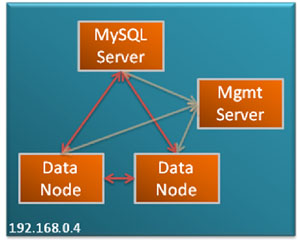

{kind=link}
Single host Cluster
A series of quick-start guides are now available to get you up and running with MySQL Cluster in as little time as possible; they are available for LINUX/Mac OS X, Windows and Solaris. The configuration is intentionally a simple one – 2 data nodes, 1 management node and 1 MySQL Server. Once you have this up and running, your next experiment may be to extend this over multiple hosts.
Download the Quick Start Guide for your platform below:
- MySQL Cluster Quick Start for Linux – also works for Mac OS X
- MySQL Cluster Quick Start for Windows
- MySQL Cluster Quick Start for Solaris
These links are also available from the MySQL Cluster download page.
The intent is that these guides should be simple to follow even if you have never tried MySQL Cluster (or even MySQL) before. Any comments or suggested improvements would be appreciated.
Hello Rons,
I am newbie and learning elements about MySQL Cluster 7.2.
My cluster is for a web portal accessed by 200000 persons connected per hour.
How many dataNodes, sqlNodes and mgmNodes and what hardware to build this cluster ? Dual-core or quad-core ? What hardware constructor ?
At first glance, I was going for :
– 2 sqlNodes sharing same hosts as 2 mgmNodes
– 2 dataNodes
Any suggestion ?
Thanks.
ADB
ASB,
As a starting point, take a look at http://www.mysql.com/why-mysql/white-papers/mysql_wp_high-availability_webrefarchs.php which describes how to build various sized systems using MySQL (not just Cluster).
The minimum fault-tolerant Cluster is 3 machines – with data nodes and MySQL servers running on two of the machines and A management node and more MySQL servers on the third.
In general, lots of RAM, fast CPUs, fast disk IO and fast network interconnects will deliver the best performance.
Another useful guide is the evaluation guide that you can download from http://www.mysql.com/why-mysql/white-papers/mysql_cluster_eval_guide.php
Andrew.
Hi,
I am a fresher to MySQL Cluster environment. Can you please suggest how to do “crash recovery” in MySql cluster environment and what are the transaction logs in MySql clusters, as they say Binary Logs are not Transaction Logs? Or can you please let me know any resource, where I can read this?
Thanks. Will appreciate your responese..!!
Hi Prajeet,
crash recovery is automated in MySQL Cluster – when a node rejoins the cluster it automatically recovers. If possible, as part of its recovery a data node will use its local checkpoint (disk snapshot of the data) and then fetch any updates from the other data node in the node group.
Binary logs are used for MySQL replication but don’t play a part in recovery.
There are 2 types of checkpoints for MySQL Cluster:
Hi all,
i tried to set a cluster using a virtualbox VMs environment but without success, i described my issue on the Mysql Cluster forum here:
http://forums.mysql.com/read.php?25,573073,573073#msg-573073
Any help will be more than appreciated really!
Regards
I posted a response to your forum question…. http://forums.mysql.com/read.php?25,573073,573162#msg-573162
Hi guys,
I would like to ask you some accurate questions about cluster:
1.
Do you confirm that if I don’t have a section like that :
[mysql_cluster]
ndb-connectstring=10.12.14.26,10.12.14.25
…the data nodes don’t start. I don’t understand ’cause there is not in the generated file we can find with severalnines generator
2. You confirm that using ‘skip_name_resolve’ means I must only use @IP address, ’cause I’ve some warnings about it the logs.
3. in the generated file, I saw memlock=0 but I’m not sure about its use. could you please give more informations about this parameter ?
4. concerning [MYSQLD] section, you confirm I must have as much as [MYSQLD] as “connection pools” ?
if connection pools = 4 then I have 4 identical [MYSQLD] section by SQL node ? (’cause I’ve warning about ID allocation when starting SQL nodes)
5. now very important : is it true that using AUTOINCREMENT on PKey column is not a good idea in a cluster ?
’cause i really need an autoincrement.
6. always about autoincrement, I can’t explain to me why even after emptying tables (and try to alter to set autocincrement to 1 or even with TRUNCATE TABLE (after tests)) I can’ retrieve ID=1 in the concerned cluster tables. To be accurate, it seems to be OK on one node, not on the second. So, if I launch my programs after emptying out the tables, I get some ID like 1 and 1025 for the first 2 records for example…
Hope my request is clear..
7. lastly, I noticed many lines lije this one /mysqld/mysql/bin/mysqld: Forcing close of thread 66 user: ‘root’
in the SQL nodes logs.Each line for a different thread..
8. I’m usinf cluster control, so if someone is a geek and kind enough to check if he doens’t see some craps in my config files, I can give the access via http to my cluster control page…It would be great !
Really sorry for bothering with this lot a questions, but I need more understanding.
Thanks in advance.
Hi ThomasC,
1) The data node must be able to connect to the data node in order to find the other nodes in the Cluster. Unless the data nodes are running on the same host as the management node, they must be told the connect-string for the management node (as must other nodes). The connect-string can be specified in the config file or through a command line option. I can’t comment on what the ServeralNines tools do.
2) I’ve not experimented with skip_name_resolve
3) I’ve not experimented with memlock and can’t comment on SeveralNines tools but the parameter is described at http://dev.mysql.com/doc/refman/5.5/en/server-options.html#option_mysqld_memlock
4) You need a [mysqld] or [ndbapi] section for each connection to the data nodes. In the simplest case this would be 1 per mysqld but if you wanted to improve performance then you can use “connection pooling” to exploit multiple connections per mysqld – see http://www.mysql.com/why-mysql/white-papers/guide-to-optimizing-performance-of-the-mysql-cluster/ for details on connection pooling
5) You can use auto-increment columns for a Cluster primary key. Note that you need to make sure that the same PK isn’t used by 2 different mysqlds in the same Cluster; you can enforce that by using the an increment value >1 and a different starting point on each mysqld using auto_increment_increment and auto_increment_offset.
6) It is regular MySQL functionality that the auto-increment starting point isn’t set back to zero after deleting the contents of a table. Don’t know if this answers everything you’ve seen, if not, perhaps it’s some option that’s set in you config files (e.g. by the S9s tool)?
7) Could this be the client connections being shutdown when stopping or restarting mysqlds?
8) I’m not familiar with ClusterControl and so can’t help you with that. Oracle do of course offer MySQL subscriptions that include consultative support and so that would be away to get an expert to look at your config files.
Regards, Andrew.
i want to implement ndb cluster with 1 managment nos=de and 2 data nodes is it possible,please share how to do it
vijay2sachin@gmail.com
Hi Vijay,
yes it’s possible to have 2 data nodes + 1 management node. If you want the solution to be fault-tolerant then make sure that each of these processes runs on a different machine. The simplest way to set this up is to use the auto-installer that’s part of MySQL Cluster 7.3 – see this blog post.
hi Andrew
Thanks for your quick response, i tried to configure cluster using rpm available at mysql site
i used below instruction,but i am not able to do data cluster, management server shows all data nodes connected
can please help me if i am doing missing something, below is the config.
problems:
1. i am not able to see data on both data nodes
2. i have 2 rpms one is cluster-server & another cluster- client — where to use which rpm
3. do i need to setup cluster-server rpm on datanode
can you guide me how the rpm works & how they be installed on what node..
Thanks
Server1 192.168.100.1 (Cluster Management Server)
Server2 192.168.100.2 (Data Node 1)
Server3 192.168.100.3 (Data Node 2)
First step is to install MySQL Cluster Management Server on Server1. Lets download from MySQL Cluster 6.2 from MySQL website (http://dev.mysql.com/downloads/cluster/). This guide is intended for Debian based systems, so we will download nonrpm package (mysql-cluster-gpl-6.2.15-linux-i686-glibc23.tar.gz). Here are the steps to follow, to set up the MySQL Cluster Management Server (ndb_mgmd) and the cluster Management client (ndb_mgm)
mkdir /usr/src/mysql-mgm
cd /usr/src/mysql-mgm
wget pick up any mirror from MySQL’s website
tar xvfz mysql-cluster-gpl-6.2.15-linux-i686-glibc23.tar.gz
cd mysql-cluster-gpl-6.2.15-linux-i686-glibc23
mv bin/ndb_mgm /usr/bin
mv bin/ndb_mgmd /usr/bin
chmod 755 /usr/bin/ndb_mg*
cd /usr/src
rm -rf /usr/src/mysql-mgm
Next step is to create the Cluster configuration file:
mkdir /var/lib/mysql-cluster
cd /var/lib/mysql-cluster
vi config.ini
(I try to use nano as the text editor, just because it is much easier to use than vi.)
Here is the sample config file:
[NDBD DEFAULT]
NoOfReplicas=2
[MYSQLD DEFAULT]
[NDB_MGMD DEFAULT]
[TCP DEFAULT]
# Section for the cluster management node
[NDB_MGMD]
# IP address of the management node (server1)
HostName=192.168.100.1
# Section for the storage nodes
[NDBD]
# IP address of the first data node (Server2)
HostName=192.168.100.2
DataDir= /var/lib/mysql-cluster
[NDBD]
# IP address of the second storage node (Server3)
HostName=192.168.100.3
DataDir=/var/lib/mysql-cluster
# one [MYSQLD] per storage node
[MYSQLD]
[MYSQLD]
Now let’s start the Management Server:
ndb_mgmd -f /var/lib/mysql-cluster/config.ini
Now, we would want to start the Management Server automatically in case of a system reboot, so we add an init script to do that:
echo ‘ndb_mgmd -f /var/lib/mysql-cluster/config.ini’ > /etc/init.d/ndb_mgmd
chmod 755 /etc/init.d/ndb_mgmd
update-rc.d ndb_mgmd defaults
Data Nodes Configuration (Server2 and Server3):
Now let’s set up the data nodes. Here are the steps to do that (do on both data nodes):
groupadd mysql
useradd -g mysql mysql
cd /usr/local/
wget pick up any mirror from MySQL’s website
tar xvfz mysql-cluster-gpl-6.2.15-linux-i686-glibc23.tar.gz
ln -s mysql-cluster-gpl-6.2.15-linux-i686-glibc23 mysql
cd mysql
scripts/mysql_install_db –user=mysql
chown -R root:mysql .
chown -R mysql data
cp support-files/mysql.server /etc/init.d/
chmod 755 /etc/init.d/mysql.server
update-rc.d mysql.server defaults
cd /usr/local/mysql/bin
mv * /usr/bin
cd ../
rm -fr /usr/local/mysql/bin
ln -s /usr/bin /usr/local/mysql/bin
Next we need to create the MySQL config file /etc/my.cnf on both nodes:
vi /etc/my.cnf
Here is the sample file:
[mysqld]
ndbcluster
# IP address of the cluster management server (Server1)
ndb-connectstring=192.168.100.1
[mysql_cluster]
# IP address of the cluster management Server (Server1)
ndb-connectstring=192.168.100.1
Our MySQL installation is almost complete, now let’s create the data directories and start the MySQL Server on both nodes:
mkdir /var/lib/mysql-cluster
cd /var/lib/mysql-cluster
ndbd –initial
/etc/init.d/mysql.server start
(Important: we need to run ndbd –initial only when the start MySQL for the first time, and if /var/lib/mysql-cluster/config.ini on Management Server changes.)
MySQL installation is complete, now let’s put in a root password for our MySQL Servers:
mysqladmin -u root password newrootpassword
Again, it makes sense to start up the cluster nodes automatically in case of a system restart/failure. Here are the ndbd init script and system startup links for that:
echo ‘ndbd’ > /etc/init.d/ndbd
chmod 755 /etc/init.d/ndbd
update-rc.d ndbd defaults
this completes are Cluster installation process, next, now let’s test it.
Test:
On Cluster Management Server, run the Cluster Management Client:
ndb_mgm
It will take you to the ndb_mgm prompt:
— NDB Cluster — Management Client —
ndb_mgm>
Now type show on the prompt:
ndb_mgm> show;
You should see an output similar to this:
ndb_mgm> show;
Connected to Management Server at: localhost:1186
Cluster Configuration
———————
[ndbd(NDB)] 2 node(s)
id=2 @192.168.100.2 (Version: version number, Nodegroup: 0, Master)
id=3 @192.168.100.3 (Version: version number, Nodegroup: 0)
[ndb_mgmd(MGM)] 1 node(s)
id=1 @192.168.100.1 (Version: version number)
[mysqld(API)] 2 node(s)
id=4 @192.168.100.2 (Version: version number)
id=5 @192.168.100.3 (Version: version number)
ndb_mgm>
We should see our data nodes connected in the previous screen. Now type quit to close the Management client:
ndb_mgm>quit;
Test the Cluster:
Now, let’s create a Test database on Server2 (192.168.100.2) and run some tests:
On Server2:
mysql -u root -p
CREATE DATABASE testdb;
USE testdb;
CREATE TABLE tblCustomer (ID INT) ENGINE=NDBCLUSTER;
REPLACE INTO tblCustomer VALUES (1);
SELECT * FROM tblCustomer;
quit;
pay attention to the create table statement, we must specify ENGINE=NDBCLUSTER for all tables that we want to clustered. As stated earlier, MySQL cluster only saupports NDB engine, so if you use any other engine, table simply wont get clustered.
The result of the SELECT statement would be:
mysql> SELECT * FROM tblCustomer;
+——+
| ID |
+——+
| 1 |
+——+
Since clustering in MySQL is at the “table level” not at the database level, so we would have to create the database sperately on Server3 (192.168.100.3) as well, but afterwards tblCustomer would be replicated with all its data (since the engine is NDBCLUSTER):
On Server3:
mysql -u root -p
CREATE DATABASE testdb;
USE testdb;
SELECT * FROM tblCustomer;
Now, if we insert a row of data on Server3, it should be replicated back to Server2:
REPLACE INTO tblCustomer VALUES (2);
If we run a SELECT query on Server2, here is what we should see:
mysql> SELECT * FROM testtable;
+——+
| ID |
+——+
| 1 |
| 2 |
+——+
Test Node shutdown:
Now run the following on Server2 to test what happens if a node goes offline:
killall ndbd
and run this command to make sure that all ndbd processes have terminated:
ps aux | grep ndbd | grep -iv grep
If you still see any prpcesses, run this again:
killall ndbd
Now, lets go the management server (Server1) and run the following to check the cluster status:
ndb_mgm
On the ndb_mgm console. run:
show;
it should be bring you an output simlar to the following:
ndb_mgm> show;
Connected to Management Server at: localhost:1186
Cluster Configuration
———————
[ndbd(NDB)] 2 node(s)
id=2 (not connected, accepting connect from 192.168.100.2)
id=3 @192.168.100.3 (Version: —–, Nodegroup: 0, Master)
[ndb_mgmd(MGM)] 1 node(s)
id=1 @192.168.100.1 (Version: —–)
[mysqld(API)] 2 node(s)
id=4 @192.168.100.2 (Version: ——–)
id=5 @192.168.100.3 (Version: ——–)
ndb_mgm>
You see, Server2 is not connected anymore.
Type quit; to leave the ndb_mgm management console. Now, let’s check on Server3, if our database is still up and we can make connections to it:
mysql -u root -p
USE testdb;
SELECT * FROM tblCustomer;
quit;
It should bring up the following result set:
mysql> SELECT * FROM tblCustomer;
+——+
| ID |
+——+
| 1 |
| 2 |
+——+
Now, let’s start MySQL on Server2 again by issuing the following command:
ndbd
How to Restart MySQL Cluster:
In managing a produciton MySQL environment or any other transactional database environment, times come when we have to restart/shutdone our systems. So, let’s see how would we shutdown our MySQL Cluster:
On Server1, open the management console:
ndb_mgm
then type:
shutdown;
it would bring up an output like this:
ndb_mgm> shutdown;
Node 3: Cluster shutdown initiated
Node 2: Node shutdown completed.
2 NDB Cluster node(s) have shutdown.
NDB Cluster management server shutdown.
ndb_mgm>
This means that the cluster nodes Server2 and Server3 and also the Management node (Server1) have shut down.
To leave the Management console, run:
quit;
To start the cluster management server again, run the following (on Server1, Management Server):
ndb_mgmd -f /var/lib/mysql-cluster/config.ini
and on Server2 and Server3, run the following:
ndbd
in case /var/lib/mysql-cluster/config.ini on Management Server changed, you should run the following:
ndbd –initial
You can go back to the Management node and verify if the cluster started ok, without any errors:
ndb_mgm
on the Management console run the following:
show;
This should bring up the cluster configuration.
i am unable to create database in the cluster its asking for mysql-client-5.5 installation and even when i am trying to install,its not hapenning!
One more issue
id=2 (not connected, accepting connect from 192.168.1.151)
for all the nodes even though my all nodes are up
I have 2 Data Nodes and 2 Sql nodes
Hi, Andrew,
I am totaly new with mysql cluster also with mysql at all
I tried to use Mysql cluster from 3 days , but I got suck , I tataly confused
1- I use windows 8 , I download msi from (http://dev.mysql.com/downloads/cluster/)
2- try to follow (http://downloads.mysql.com/tutorials/cluster/mysql_wp_cluster_quickstart_windows.pdf) steps
3- I have 2 local ip’s (172.16.1.110 its my ip and 172.16.1.121 another local Ip under the same domain)
I tried to follow GUI as video but I have exception that he can’t recognized the information of the second Ip which is (172.16.1.121) and tells me that
couldn’t open socket
please tell me steps
what shall I do first
and how can I assign management cluster ip
and node cluster ip
hello!
current, I am using mysql cluster 7.0.8.
I want to upgrade version. How much is appropriate?
Thanks.
Sorry, my english is not good.
If you’re wanting to understand what upgrade paths are supported then this is a good starting point… http://dev.mysql.com/doc/refman/5.6/en/mysql-cluster-upgrade-downgrade.html
Andrew.